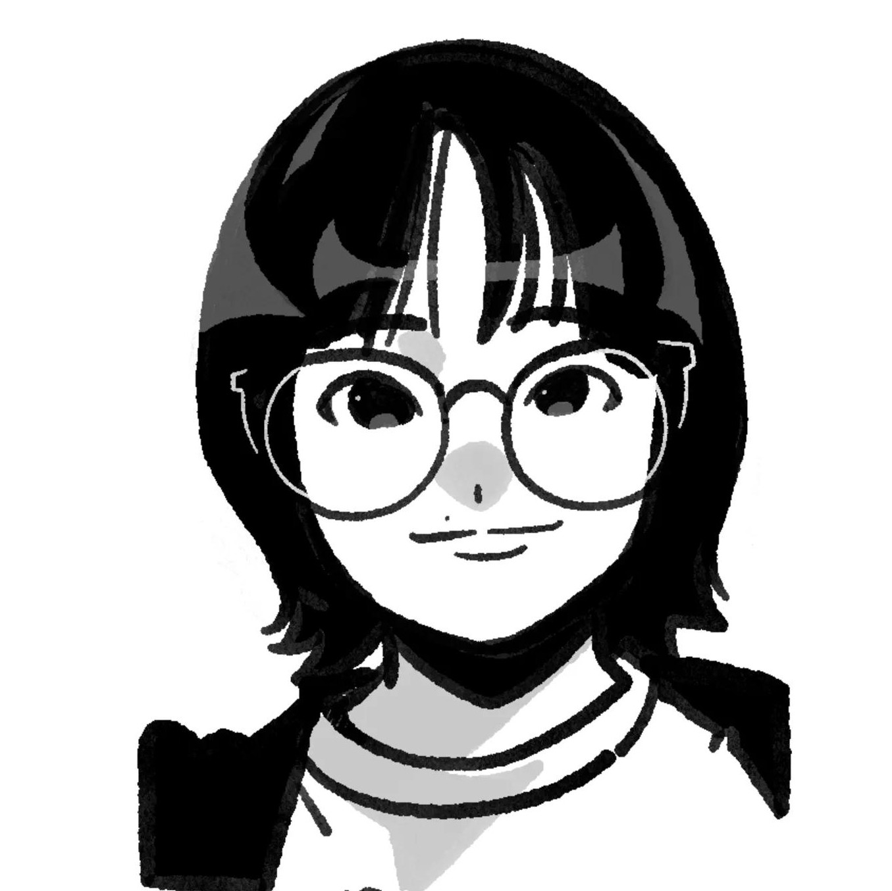
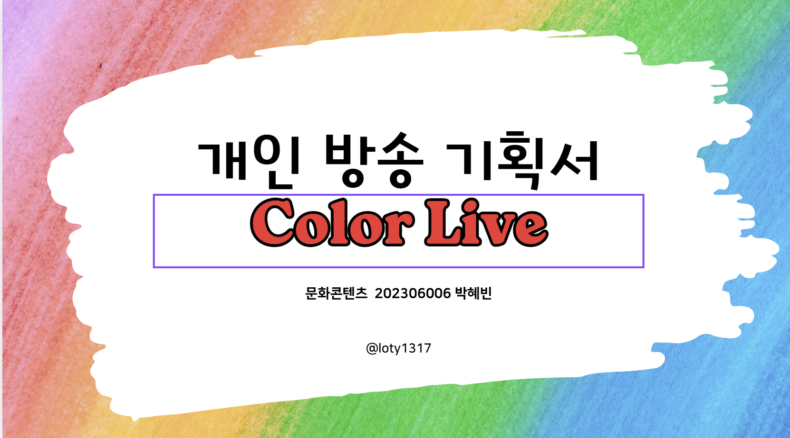
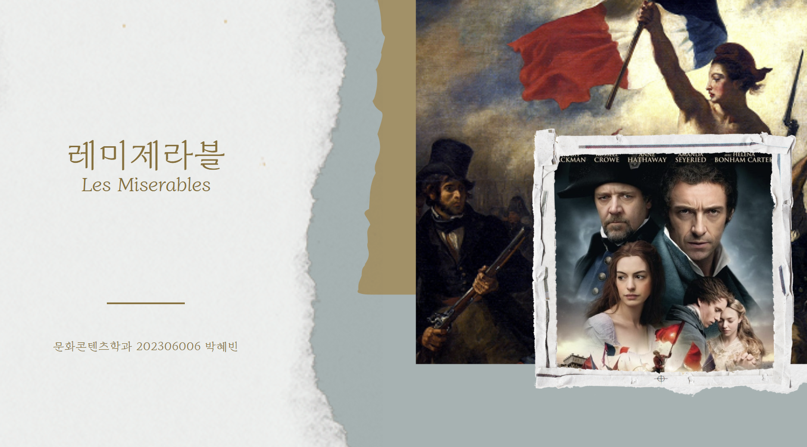
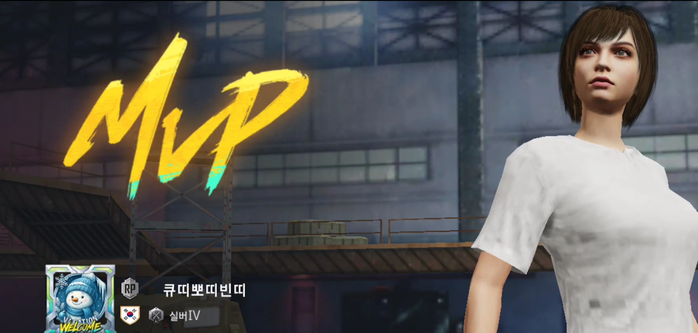

컬러 라이브
개인 방송 콘텐츠를 기획하며 방송의 콘셉트, 진행 방식, 타깃 시청자층을 구체적으로 설계하였습니다. 기획부터 제작까지 전체 과정을 총괄하며 아이디어를 하나의 콘텐츠로 구체화하는 경험을 쌓았습니다. 설명만으로는 다 전달되기 어려웠지만, 독창적인 발상과 명확한 기획 의도로 평가를 받았습니다.

저는 영상 제작과 콘텐츠 기획에 관심이 많은 문화콘텐츠 전공 대학생입니다.
다양한 색이 모여 하나의 분위기와 감정을 만들어내듯,
사람들의 공감과 추억을 담은 이야기를 영상으로 표현하고 싶습니다.
머릿속의 어지럽혀진 아이디어를 구체적인 기획으로 정리하는 시간을 즐깁니다.
그런 기획 위에 저만의 색이라는 옷이 입혀진,
세상에 하나뿐인 콘텐츠를 탄생시키고 있습니다.
개인 방송 콘텐츠를 기획하며 방송의 콘셉트, 진행 방식, 타깃 시청자층을 구체적으로 설계하였습니다. 기획부터 제작까지 전체 과정을 총괄하며 아이디어를 하나의 콘텐츠로 구체화하는 경험을 쌓았습니다. 설명만으로는 다 전달되기 어려웠지만, 독창적인 발상과 명확한 기획 의도로 평가를 받았습니다.

영화 「레미제라블」의 줄거리와 시대적 배경, 작품성을 분석하여 소개하는 프로젝트를 진행하였다. 기획 제작과 자료 조사를 맡아 핵심 정보를 효과적으로 전달할 수 있도록 구성하였다. 충분한 자료 검증을 바탕으로 질의응답과 피드백 과정에서 신뢰성 있는 설명을 제공하였습니다.

「오늘부터 배린이 아닙니다.」는 모바일 게임 「배틀그라운드 모바일」의 플레이 과정을 담은 콘텐츠 영상 프로젝트입니다. 기획부터 촬영 관리, 영상 편집까지 전 과정을 수행하며 1시간 분량의 영상을 26분으로 압축하여 핵심 장면 중심으로 구성하였습니다. 이를 통해 게임 콘텐츠 제작 프로세스와 시청자 친화적인 편집 기법을 실무적으로 익힐 수 있었습니다.

추후 다양한 프로젝트 및 활동 내용 추가 예정
영상 제작 및 콘텐츠 기획 전공
mail loty1317@gmail.com
photo_camera @loty1317
smart_display youtube.com/@haroon